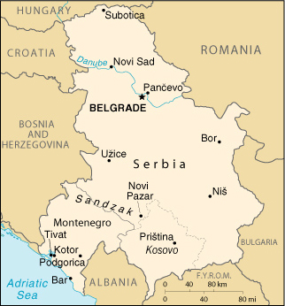

|
Yugoslavia | |
| Introduction Geography People Government Economy Communications Transportation Military Transnational Issues | ||
|  | ||
| Yugoslavia | Introduction | Top of Page |
| Background: | The Kingdom of Serbs, Croats, and Slovenes was formed in 1918; its name was changed to Yugoslavia in 1929. Occupation by Nazi Germany in 1941 was resisted by various partisan bands that fought themselves as well as the invaders. The group headed by Marshal TITO took full control upon German expulsion in 1945. Although communist in name, his new government successfully steered its own path between the Warsaw Pact nations and the West for the next four and a half decades. In the early 1990s, post-TITO Yugoslavia began to unravel along ethnic lines: Slovenia, Croatia, and The Former Yugoslav Republic of Macedonia all declared their independence in 1991; Bosnia and Herzegovina in 1992. The remaining republics of Serbia and Montenegro declared a new "Federal Republic of Yugoslavia" in 1992 and, under President Slobodan MILOSEVIC, Serbia led various military intervention efforts to unite Serbs in neighboring republics into a "Greater Serbia." All of these efforts were ultimately unsuccessful. In 1999, massive expulsions by Serbs of ethnic Albanians living in the autonomous republic of Kosovo provoked an international response, including the NATO bombing of Serbia and the stationing of NATO and Russian peacekeepers in Kosovo. Blatant attempts to manipulate presidential balloting in October of 2000 were followed by massive nationwide demonstrations and strikes that saw the election winner, Vojislav KOSTUNICA, replace MILOSEVIC. |
| Yugoslavia | Geography | Top of Page |
| Location: | Southeastern Europe, bordering the Adriatic Sea, between Albania and Bosnia and Herzegovina |
| Geographic coordinates: | 44 00 N, 21 00 E |
| Map references: | Europe |
| Area: |
total:
102,350 sq km
land: 102,136 sq km water: 214 sq km |
| Area - comparative: | slightly smaller than Kentucky |
| Land boundaries: |
total:
2,246 km
border countries: Albania 287 km, Bosnia and Herzegovina 527 km, Bulgaria 318 km, Croatia (north) 241 km, Croatia (south) 25 km, Hungary 151 km, The Former Yugoslav Republic of Macedonia 221 km, Romania 476 km |
| Coastline: | 199 km |
| Maritime claims: | NA |
| Climate: | in the north, continental climate (cold winters and hot, humid summers with well distributed rainfall); central portion, continental and Mediterranean climate; to the south, Adriatic climate along the coast, hot, dry summers and autumns and relatively cold winters with heavy snowfall inland |
| Terrain: | extremely varied; to the north, rich fertile plains; to the east, limestone ranges and basins; to the southeast, ancient mountains and hills; to the southwest, extremely high shoreline with no islands off the coast |
| Elevation extremes: |
lowest point:
Adriatic Sea 0 m
highest point: Daravica 2,656 m |
| Natural resources: | oil, gas, coal, antimony, copper, lead, zinc, nickel, gold, pyrite, chrome, hydropower, arable land |
| Land use: |
arable land:
40%
permanent crops: 0% permanent pastures: 20.7% forests and woodland: 17.3% other: 22% (1998 est.) |
| Irrigated land: | NA sq km |
| Natural hazards: | destructive earthquakes |
| Environment - current issues: | pollution of coastal waters from sewage outlets, especially in tourist-related areas such as Kotor; air pollution around Belgrade and other industrial cities; water pollution from industrial wastes dumped into the Sava which flows into the Danube |
| Environment - international agreements: |
party to:
Air Pollution, Climate Change, Hazardous Wastes, Law of the Sea, Marine Dumping, Marine Life Conservation, Nuclear Test Ban, Ozone Layer Protection, Ship Pollution, Wetlands
signed, but not ratified: Biodiversity |
| Geography - note: | controls one of the major land routes from Western Europe to Turkey and the Near East; strategic location along the Adriatic coast |
| Yugoslavia | People | Top of Page |
| Population: |
10,677,290
note: all data dealing with population is subject to considerable error because of the dislocations caused by military action and ethnic cleansing (July 2001 est.) |
| Age structure: |
0-14 years:
19.8% (male 1,095,905; female 1,024,123)
15-64 years: 65.3% (male 3,415,728; female 3,553,343) 65 years and over: 14.9% (male 681,559; female 906,632) (2001 est.) |
| Population growth rate: | -0.27% (2001 est.) |
| Birth rate: | 12.61 births/1,000 population (2001 est.) |
| Death rate: | 10.54 deaths/1,000 population (2001 est.) |
| Net migration rate: | -4.71 migrant(s)/1,000 population (2001 est.) |
| Sex ratio: |
at birth:
1.08 male(s)/female
under 15 years: 1.08 male(s)/female 15-64 years: 0.96 male(s)/female 65 years and over: 0.75 male(s)/female total population: 0.95 male(s)/female (2001 est.) |
| Infant mortality rate: | 17.42 deaths/1,000 live births (2001 est.) |
| Life expectancy at birth: |
total population:
73.5 years
male: 70.57 years female: 76.67 years (2001 est.) |
| Total fertility rate: | 1.75 children born/woman (2001 est.) |
| HIV/AIDS - adult prevalence rate: | NA% |
| HIV/AIDS - people living with HIV/AIDS: | NA |
| HIV/AIDS - deaths: | NA |
| Nationality: |
noun:
Serb(s); Montenegrin(s)
adjective: Serbian; Montenegrin |
| Ethnic groups: | Serb 62.6%, Albanian 16.5%, Montenegrin 5%, Hungarian 3.3%, other 12.6% (1991) |
| Religions: | Orthodox 65%, Muslim 19%, Roman Catholic 4%, Protestant 1%, other 11% |
| Languages: | Serbian 95%, Albanian 5% |
| Literacy: |
definition:
age 15 and over can read and write
total population: 93% male: 97.2% female: 88.9% (1991) |
| Yugoslavia | Government | Top of Page |
| Country name: |
conventional long form:
Federal Republic of Yugoslavia
conventional short form: Yugoslavia local long form: Savezna Republika Jugoslavija local short form: Jugoslavija |
| Government type: | republic |
| Capital: | Belgrade |
| Administrative divisions: | 2 republics (republike, singular - republika); and 2 nominally autonomous provinces* (autonomn pokrajine, singular - autonomna pokrajina); Kosovo*, Montenegro, Serbia, Vojvodina* |
| Independence: | 27 April 1992 (Federal Republic of Yugoslavia or FRY formed as self-proclaimed successor to the Socialist Federal Republic of Yugoslavia or SFRY) |
| National holiday: | Republic Day, 29 November |
| Constitution: | 27 April 1992 |
| Legal system: | based on civil law system |
| Suffrage: | 16 years of age, if employed; 18 years of age, universal |
| Executive branch: |
chief of state:
President Vojislav KOSTUNICA (since 7 October 2000)
head of government: Prime Minister Dragisa PESIC (since 24 July 2001); Deputy Prime Minister Miroljub LABUS (since 25 January 2001) cabinet: Federal Executive Council elections: president elected by direct popular vote for up to two, four-year terms; election last held 24 September 2000 (next to be held NA 2004); prime minister appointed by the president election results: Vojislav KOSTUNICA elected president; percent of vote - Vojislav KOSTUNICA 55%, Slobodan MILOSEVIC 35% |
| Legislative branch: |
bicameral Federal Assembly or Savezna Skupstina consists of the Chamber of Republics or Vece Republika (40 seats - 20 Serbian, 20 Montenegrin; members distributed on the basis of party representation in the republican assemblies to serve four-year terms; note - the Assembly passed a new constitutional amendment calling for direct elections for the deputies to the upper chamber) and the Chamber of Citizens or Vece Gradjana (138 seats - 108 Serbian with half elected by constituency majorities and half by proportional representation, 30 Montenegrin with six elected by constituency and 24 proportionally; members serve four-year terms)
elections: Chamber of Republics - last held 24 September 2000 (next to be held NA 2004); Chamber of Citizens - last held 24 September 2000 (next to be held NA 2004) election results: Chamber of Republics - percent of vote by party - NA%; seats by party - SNP 19, DOS 10, SPS/JUL 7, SRS 2, SPO 1, SNS 1; note - seats are filled on a proportional basis to reflect the composition of the legislatures of the republics of Montenegro and Serbia; since 1998 Serbia has effectively barred Montenegro from its constitutional right to delegate deputies to the Chamber of Republics; Chamber of Citizens - percent of vote by party - NA%; seats by party - DOS 55, SPS/JUL 46, SNP 28, SRS 4, SNS 2, other 3 |
| Judicial branch: | Federal Court or Savezni Sud; Constitutional Court; judges for both courts are elected by the Federal Assembly for nine-year terms |
| Political parties and leaders: | Alliance of Vojvodina Hungarians or SVM [Jozsef KASZA]; Civic Alliance of Serbia or GSS [Vesna PESIC]; Coalition Sandzak [Rasim JAJIC]; Coalition Sumadija [Branislav KOVACEVIC]; Democratic Alternative of DA [Nebojsa COVIC]; Democratic Center or DC [Dragoljub MICUNOVIC]; Democratic Christian Party of Serbia of DHSS [Vladan BATIC]; Democratic League of Kosovo or LDK [Dr. Ibrahim RUGOVA, president]; Democratic Opposition of Serbia or DOS [leader NA]; Democratic Party or DS [Zoran DJINDJIC]; Democratic Party of Serbia or DSS [Vojislav KOSTUNICA]; Democratic Party of Socialists of Montenegro or DPS [Milo DJUKANOVIC]; Movement for a Democratic Serbia or PDS [Momcilo PERISIC]; New Democracy or ND [Dusan MIHAJLOVIC]; New Serbia [Velimir ILIC and Milan St. PROTIC]; People's Party of Montenegro or NS [Dragan SOC]; Serb People's Party or SNS [leader NA]; Serbian Radical Party or SRS [Vojislav SESELJ]; Serbian Renewal Movement or SPO [Vuk DRASKOVIC, president]; Serbian Socialist Party or SPS (former Communist Party) [Slobodan MILOSEVIC]; Social Democracy or SD [Vuk OBRADOVIC]; Social Democratic Union or SDU [Zarko KORAC]; Socialist People's Party of Montenegro or SNP [Momir BULATOVIC]; Yugoslav United Left or JUL [Ljubisa RISTIC] |
| Political pressure groups and leaders: | Alliance for the Future of Kosovo or AAK [leader RAMUSH]; Group of 17 Independent Economists or G-17 [leader NA]; National Movement for the Liberation of Kosovo or LKCK [Sabit GASHI]; Otpor Student Resistance Movement [leader NA]; Political Council for Presevo, Meveda and Bujanovac or PCPMB [leader NA]; The People's Movement for Kosovo or LPK [leader NA] |
| International organization participation: | BIS, CE (guest), FAO (applicant), G- 9, G-15, G-24, G-77, IAEA, ICAO, ICC, ICFTU, ICRM, IFAD, IFRCS, IHO, ILO, IMF, IMO, Inmarsat, Intelsat, IOC, IOM (observer), ISO, ITU, NAM, OPCW, OSCE, UN, UNCTAD, UNESCO, UNIDO, UPU, WHO, WIPO, WMO, WTrO (observer) |
| Diplomatic representation in the US: |
chief of mission:
Ambassador Milan PROTIC
chancery: 2410 California St. NW, Washington, DC 20008 note: Yugoslavia restored its diplomatic mission in the US in November 2000 after temporarily ceasing its operations at the beginning of the March 1999 NATO bombing campaign |
| Diplomatic representation from the US: |
chief of mission:
Ambassador (vacant); Charge d'Affaires William MONTGOMERY
embassy: Kneza Milosa 30, 11000 Belgrade note: the US reestablished relations with Yugoslavia 17 November 2000; the embassy is not scheduled to open for business until extensive renovations have been completed |
| Flag description: | three equal horizontal bands of blue (top), white, and red |
| Yugoslavia | Economy | Top of Page |
| Economy - overview: | The swift collapse of the Yugoslav federation in 1991 was followed by highly destructive warfare, the destabilization of republic boundaries, and the breakup of important interrepublic trade flows. Output in Yugoslavia dropped by half in 1992-93. Like the other former Yugoslav republics, it had depended on its sister republics for large amounts of energy and manufactures. Wide differences in climate, mineral resources, and levels of technology among the republics accentuated this interdependence, as did the communist practice of concentrating much industrial output in a small number of giant plants. The breakup of many of the trade links, the sharp drop in output as industrial plants lost suppliers and markets, and the destruction of physical assets in the fighting all have contributed to the economic difficulties of the republics. Hyperinflation ended with the establishment of a new currency unit in June 1993; prices were relatively stable from 1995 through 1997, but inflationary pressures resurged in 1998. Reliable statistics continue to be hard to come by, and the GDP estimate is extremely rough. The economic boom anticipated by the government after the suspension of UN sanctions in December 1995 has failed to materialize. Government mismanagement of the economy is largely to blame, but the damage to Yugoslavia's infrastructure and industry by the NATO bombing during the war in Kosovo have added to problems. All sanctions now have been lifted. Yugoslavia is in the first stage of economic reform. Severe electricity shortages are chronic, the result of lack of investment by former regimes, depleted hydropower reservoirs due to extended drought, and lack of funds. GDP growth in 2000 was perhaps 15%, which made up for a large part of the 20% decline of 1999. |
| GDP: | purchasing power parity - $24.2 billion (2000 est.) |
| GDP - real growth rate: | 15% (2000 est.) |
| GDP - per capita: | purchasing power parity - $2,300 (2000 est.) |
| GDP - composition by sector: |
agriculture:
20%
industry: 50% services: 30% (1998 est.) |
| Population below poverty line: | NA% |
| Household income or consumption by percentage share: |
lowest 10%:
NA%
highest 10%: NA% |
| Inflation rate (consumer prices): | 42% (1999 est.) |
| Labor force: | 1.6 million (1999 est.) |
| Labor force - by occupation: | agriculture NA%, industry NA%, services NA% |
| Unemployment rate: | 30% (2000 est.) |
| Budget: |
revenues:
$NA
expenditures: $NA, including capital expenditures of $NA |
| Industries: | machine building (aircraft, trucks, and automobiles; tanks and weapons; electrical equipment; agricultural machinery); metallurgy (steel, aluminum, copper, lead, zinc, chromium, antimony, bismuth, cadmium); mining (coal, bauxite, nonferrous ore, iron ore, limestone); consumer goods (textiles, footwear, foodstuffs, appliances); electronics, petroleum products, chemicals, and pharmaceuticals |
| Industrial production growth rate: | -22% (1999 est.) |
| Electricity - production: | 34.455 billion kWh (1999) |
| Electricity - production by source: |
fossil fuel:
70%
hydro: 30% nuclear: 0% other: 0% (1999) |
| Electricity - consumption: | 33.006 billion kWh (1999) |
| Electricity - exports: | 960 million kWh (1999) |
| Electricity - imports: | 1.923 billion kWh (1999) |
| Agriculture - products: | cereals, fruits, vegetables, tobacco, olives; cattle, sheep, goats |
| Exports: | $1.5 billion (1999) |
| Exports - commodities: | manufactured goods, food and live animals, raw materials |
| Exports - partners: | Bosnia and Herzegovina, Italy, The Former Yugoslav Republic of Macedonia, Germany (1998) |
| Imports: | $3.3 billion (1999) |
| Imports - commodities: | machinery and transport equipment, fuels and lubricants, manufactured goods, chemicals, food and live animals, raw materials |
| Imports - partners: | Germany, Italy, Russia, The Former Yugoslav Republic of Macedonia (1998) |
| Debt - external: | $14.1 billion (1999 est.) |
| Economic aid - recipient: | $NA |
| Currency: | new Yugoslav dinar (YUM); note - in Montenegro the German deutsche mark is legal tender (1999) |
| Currency code: | YUM |
| Exchange rates: | new Yugoslav dinars per US dollar - official rate: 10.0 (December 1998), 5.85 (December 1997), 5.02 (September 1996), 1.5 (early 1995); black market rate: 14.5 (December 1998), 8.9 (December 1997), 2 to 3 (early 1995) |
| Fiscal year: | calendar year |
| Yugoslavia | Communications | Top of Page |
| Telephones - main lines in use: | 2.017 million (1995) |
| Telephones - mobile cellular: | 87,000 (1997) |
| Telephone system: |
general assessment:
NA
domestic: NA international: satellite earth station - 1 Intelsat (Atlantic Ocean) |
| Radio broadcast stations: | AM 113, FM 194, shortwave 2 (1998) |
| Radios: | 3.15 million (1997) |
| Television broadcast stations: | more than 771 (including 86 strong stations and 685 low-power stations, plus 20 repeaters in the principal networks; also numerous local or private stations in Serbia and Vojvodina) (1997) |
| Televisions: | 2.75 million (1997) |
| Internet Service Providers (ISPs): | 9 (2000) |
| Internet users: | 80,000 (2000) |
| Yugoslavia | Transportation | Top of Page |
| Railways: |
total:
4,095 km
standard gauge: 4,095 km 1.435-m gauge (1,377 km partially electrified since 1992) note: during to the 1999 Kosovo conflict, the Serbian rail system suffered significant damage due to bridge destruction; many rail bridges have been rebuilt, but the bridge over the Danube at Novi Sad was still down in early 2000; however, a by-pass is available; Montenegrin rail lines remain intact |
| Highways: |
total:
48,603 km
paved: 28,822 km (including 560 km of expressways) unpaved: 19,781 km (1998 est.) note: because of the 1999 Kosovo conflict, many road bridges were destroyed; since the end of the conflict in June 1999, there has been an intensive program to either rebuild bridges or build by-pass routes |
| Waterways: |
587 km
note: The Danube River, which connects Europe with the Black Sea, runs through Serbia; since early 2000, a pontoon bridge, replacing a destroyed conventional bridge, has obstructed river traffic at Novi Sad; the obstruction can be bypassed by a canal system but inadequate lock size limits the size of vessels which may pass (2001) |
| Pipelines: | crude oil 415 km; petroleum products 130 km; natural gas 2,110 km |
| Ports and harbors: | Bar, Belgrade, Kotor, Novi Sad, Pancevo, Tivat, Zelenika |
| Merchant marine: |
total:
1 ship (1,000 GRT or over) totaling 2,437 GRT/400 DWT
ships by type: short-sea passenger 1 (2000 est.) |
| Airports: | 47 (2000 est.) |
| Airports - with paved runways: |
total:
19
over 3,047 m: 2 2,438 to 3,047 m: 5 1,524 to 2,437 m: 5 914 to 1,523 m: 3 under 914 m: 4 (2000 est.) |
| Airports - with unpaved runways: |
total:
28
1,524 to 2,437 m: 2 914 to 1,523 m: 12 under 914 m: 14 (2000 est.) |
| Heliports: | 2 (2000 est.) |
| Yugoslavia | Military | Top of Page |
| Military branches: | Army (including ground forces with border troops, naval forces, air and air defense forces) |
| Military manpower - military age: | 19 years of age |
| Military manpower - availability: | males age 15-49: 2,600,362 (2001 est.) |
| Military manpower - fit for military service: | males age 15-49: 2,088,595 (2001 est.) |
| Military manpower - reaching military age annually: | males: 82,542 (2001 est.) |
| Military expenditures - dollar figure: | $760 million (FY00) |
| Military expenditures - percent of GDP: | NA% |
| Yugoslavia | Transnational Issues | Top of Page |
| Disputes - international: | Albanian majority in Kosovo seeks independence from Yugoslavia; Croatia and Yugoslavia are negotiating the status of the strategically important Prevlaka Peninsula, which is currently under a UN military observer mission (UNMOP); the February 2001 agreement with the Former Yugoslav Republic of Macedonia settled alignment of boundary, stipulating implementation within two years |
| Illicit drugs: | transshipment point for Southwest Asian heroin moving to Western Europe on the Balkan route |
{kind=link}
{kind=link}